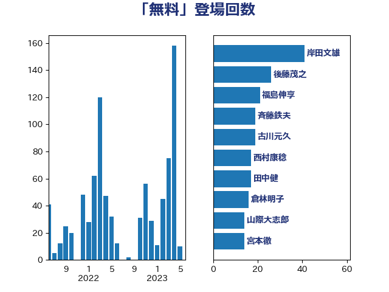

単語「無料」

| 岸田文雄 | 自由民主党 | 41 回 |
| 後藤茂之 | 自由民主党 | 26 回 |
| 福島伸享 | 無所属 | 21 回 |
| 斉藤鉄夫 | 公明党 | 19 回 |
| 古川元久 | 国民民主党 | 19 回 |
| 西村康稔 | 自由民主党 | 17 回 |
| 田中健 | 国民民主党 | 17 回 |
| 倉林明子 | 日本共産党 | 16 回 |
| 山際大志郎 | 自由民主党 | 14 回 |
| 宮本徹 | 日本共産党 | 14 回 |
| 高橋千鶴子 | 日本共産党 | 12 回 |
| 芳賀道也 | 国民民主党 | 12 回 |
| 加藤勝信 | 自由民主党 | 12 回 |
| 東徹 | 日本維新の会 | 11 回 |
| 馬淵澄夫 | 立憲民主党 | 10 回 |
| 浜口誠 | 国民民主党 | 10 回 |
| 吉田とも代 | 日本維新の会 | 9 回 |
| 石橋通宏 | 立憲民主党 | 8 回 |
| 田村憲久 | 自由民主党 | 8 回 |
| 山添拓 | 日本共産党 | 8 回 |
| 佐藤英道 | 公明党 | 8 回 |
| 田村まみ | 国民民主党 | 7 回 |
| 柚木道義 | 立憲民主党 | 7 回 |
| 岡本あき子 | 立憲民主党 | 7 回 |
| 宮本岳志 | 日本共産党 | 7 回 |
| 片山大介 | 日本維新の会 | 6 回 |
| 末松信介 | 自由民主党 | 6 回 |
| 山口那津男 | 公明党 | 6 回 |
| 小熊慎司 | 立憲民主党 | 6 回 |
| 吉良よし子 | 日本共産党 | 6 回 |
| おおつき紅葉 | 立憲民主党 | 6 回 |
| 浜田聡 | NHK党 | 5 回 |
| 永岡桂子 | 自由民主党 | 5 回 |
| 枝野幸男 | 立憲民主党 | 5 回 |
| 大島敦 | 立憲民主党 | 5 回 |
| 長妻昭 | 立憲民主党 | 4 回 |
| 遠藤良太 | 日本維新の会 | 4 回 |
| 西銘恒三郎 | 自由民主党 | 4 回 |
| 石井苗子 | 日本維新の会 | 4 回 |
| 田村智子 | 日本共産党 | 4 回 |
| 早稲田ゆき | 立憲民主党 | 4 回 |
| 川田龍平 | 立憲民主党 | 4 回 |
| 山本剛正 | 日本維新の会 | 4 回 |
| 安江伸夫 | 公明党 | 4 回 |
| 大塚耕平 | 国民民主党 | 4 回 |
| 音喜多駿 | 日本維新の会 | 3 回 |
| 金子恭之 | 自由民主党 | 3 回 |
| 道下大樹 | 立憲民主党 | 3 回 |
| 葉梨康弘 | 自由民主党 | 3 回 |
| 稲津久 | 公明党 | 3 回 |
| 福重隆浩 | 公明党 | 3 回 |
| 石井章 | 日本維新の会 | 3 回 |
| 石井啓一 | 公明党 | 3 回 |
| 漆間譲司 | 日本維新の会 | 3 回 |
| 泉健太 | 立憲民主党 | 3 回 |
| 横沢高徳 | 立憲民主党 | 3 回 |
| 山本博司 | 公明党 | 3 回 |
| 山井和則 | 立憲民主党 | 3 回 |
| 小池晃 | 日本共産党 | 3 回 |
| 大西健介 | 立憲民主党 | 3 回 |
| 大島九州男 | れいわ新選組 | 3 回 |
| 坂本祐之輔 | 立憲民主党 | 3 回 |
| 伊佐進一 | 公明党 | 3 回 |
| 一谷勇一郎 | 日本維新の会 | 3 回 |
| 馬場伸幸 | 日本維新の会 | 2 回 |
| 青山大人 | 立憲民主党 | 2 回 |
| 鈴木貴子 | 自由民主党 | 2 回 |
| 鈴木俊一 | 自由民主党 | 2 回 |
| 輿水恵一 | 公明党 | 2 回 |
| 赤嶺政賢 | 日本共産党 | 2 回 |
| 西村明宏 | 自由民主党 | 2 回 |
| 藤巻健太 | 日本維新の会 | 2 回 |
| 藤川政人 | 自由民主党 | 2 回 |
| 米山隆一 | 立憲民主党 | 2 回 |
| 竹内真二 | 公明党 | 2 回 |
| 稲富修二 | 立憲民主党 | 2 回 |
| 石川香織 | 立憲民主党 | 2 回 |
| 石垣のりこ | 立憲民主党 | 2 回 |
| 熊谷裕人 | 立憲民主党 | 2 回 |
| 湯原俊二 | 立憲民主党 | 2 回 |
| 渡辺周 | 立憲民主党 | 2 回 |
| 浜地雅一 | 公明党 | 2 回 |
| 浅野哲 | 国民民主党 | 2 回 |
| 池下卓 | 日本維新の会 | 2 回 |
| 水野素子 | 立憲民主党 | 2 回 |
| 松野明美 | 日本維新の会 | 2 回 |
| 松島みどり | 自由民主党 | 2 回 |
| 本村伸子 | 日本共産党 | 2 回 |
| 平林晃 | 公明党 | 2 回 |
| 岬麻紀 | 日本維新の会 | 2 回 |
| 岩渕友 | 日本共産党 | 2 回 |
| 山本香苗 | 公明党 | 2 回 |
| 山岡達丸 | 立憲民主党 | 2 回 |
| 小野田紀美 | 自由民主党 | 2 回 |
| 小野泰輔 | 日本維新の会 | 2 回 |
| 小宮山泰子 | 立憲民主党 | 2 回 |
| 大家敏志 | 自由民主党 | 2 回 |
| 塩村あやか | 立憲民主党 | 2 回 |
| 城井崇 | 立憲民主党 | 2 回 |
| 国光あやの | 自由民主党 | 2 回 |
| 仁比聡平 | 日本共産党 | 2 回 |
| 中谷一馬 | 立憲民主党 | 2 回 |
| たがや亮 | れいわ新選組 | 2 回 |
| 鰐淵洋子 | 公明党 | 1 回 |
| 高木かおり | 日本維新の会 | 1 回 |
| 青木愛 | 立憲民主党 | 1 回 |
| 青山周平 | 自由民主党 | 1 回 |
| 長谷川淳二 | 自由民主党 | 1 回 |
| 長友慎治 | 国民民主党 | 1 回 |
| 鈴木隼人 | 自由民主党 | 1 回 |
| 鈴木義弘 | 国民民主党 | 1 回 |
| 金村龍那 | 日本維新の会 | 1 回 |
| 野間健 | 立憲民主党 | 1 回 |
| 野田佳彦 | 立憲民主党 | 1 回 |
| 谷公一 | 自由民主党 | 1 回 |
| 衛藤晟一 | 自由民主党 | 1 回 |
| 菅義偉 | 自由民主党 | 1 回 |
| 若松謙維 | 公明党 | 1 回 |
| 自見はなこ | 自由民主党 | 1 回 |
| 羽生田俊 | 自由民主党 | 1 回 |
| 簗和生 | 自由民主党 | 1 回 |
| 窪田哲也 | 公明党 | 1 回 |
| 福島みずほ | 社会民主党 | 1 回 |
| 神谷裕 | 立憲民主党 | 1 回 |
| 神谷政幸 | 自由民主党 | 1 回 |
| 石田昌宏 | 自由民主党 | 1 回 |
| 石井正弘 | 自由民主党 | 1 回 |
| 田嶋要 | 立憲民主党 | 1 回 |
| 牧野たかお | 自由民主党 | 1 回 |
| 源馬謙太郎 | 立憲民主党 | 1 回 |
| 清水貴之 | 日本維新の会 | 1 回 |
| 深澤陽一 | 自由民主党 | 1 回 |
| 津島淳 | 自由民主党 | 1 回 |
| 池畑浩太朗 | 日本維新の会 | 1 回 |
| 武井俊輔 | 自由民主党 | 1 回 |
| 櫻井周 | 立憲民主党 | 1 回 |
| 櫛渕万里 | れいわ新選組 | 1 回 |
| 横山信一 | 公明党 | 1 回 |
| 榛葉賀津也 | 国民民主党 | 1 回 |
| 森屋隆 | 立憲民主党 | 1 回 |
| 梶山弘志 | 自由民主党 | 1 回 |
| 梅村聡 | 日本維新の会 | 1 回 |
| 梅村みずほ | 日本維新の会 | 1 回 |
| 柳ヶ瀬裕文 | 日本維新の会 | 1 回 |
| 柘植芳文 | 自由民主党 | 1 回 |
| 松野博一 | 自由民主党 | 1 回 |
| 杉尾秀哉 | 立憲民主党 | 1 回 |
| 本田顕子 | 自由民主党 | 1 回 |
| 末次精一 | 立憲民主党 | 1 回 |
| 掘井健智 | 日本維新の会 | 1 回 |
| 志位和夫 | 日本共産党 | 1 回 |
| 徳永久志 | 立憲民主党 | 1 回 |
| 広瀬めぐみ | 自由民主党 | 1 回 |
| 市村浩一郎 | 日本維新の会 | 1 回 |
| 川崎ひでと | 自由民主党 | 1 回 |
| 岸真紀子 | 立憲民主党 | 1 回 |
| 山田勝彦 | 立憲民主党 | 1 回 |
| 山口壯 | 自由民主党 | 1 回 |
| 山下芳生 | 日本共産党 | 1 回 |
| 小沢雅仁 | 立憲民主党 | 1 回 |
| 寺田稔 | 自由民主党 | 1 回 |
| 寺田学 | 立憲民主党 | 1 回 |
| 太栄志 | 立憲民主党 | 1 回 |
| 天畠大輔 | れいわ新選組 | 1 回 |
| 大岡敏孝 | 自由民主党 | 1 回 |
| 大口善徳 | 公明党 | 1 回 |
| 大串正樹 | 自由民主党 | 1 回 |
| 塩田博昭 | 公明党 | 1 回 |
| 塩川鉄也 | 日本共産党 | 1 回 |
| 堤かなめ | 立憲民主党 | 1 回 |
| 堂故茂 | 自由民主党 | 1 回 |
| 堀場幸子 | 日本維新の会 | 1 回 |
| 堀井巌 | 自由民主党 | 1 回 |
| 和田政宗 | 自由民主党 | 1 回 |
| 吉田宣弘 | 公明党 | 1 回 |
| 吉田はるみ | 立憲民主党 | 1 回 |
| 吉井章 | 自由民主党 | 1 回 |
| 務台俊介 | 自由民主党 | 1 回 |
| 佐藤正久 | 自由民主党 | 1 回 |
| 住吉寛紀 | 日本維新の会 | 1 回 |
| 伊藤岳 | 日本共産党 | 1 回 |
| 仁木博文 | 無所属 | 1 回 |
| 井坂信彦 | 立憲民主党 | 1 回 |
| 井上哲士 | 日本共産党 | 1 回 |
| 中西祐介 | 自由民主党 | 1 回 |
| 上田清司 | 国民民主党 | 1 回 |